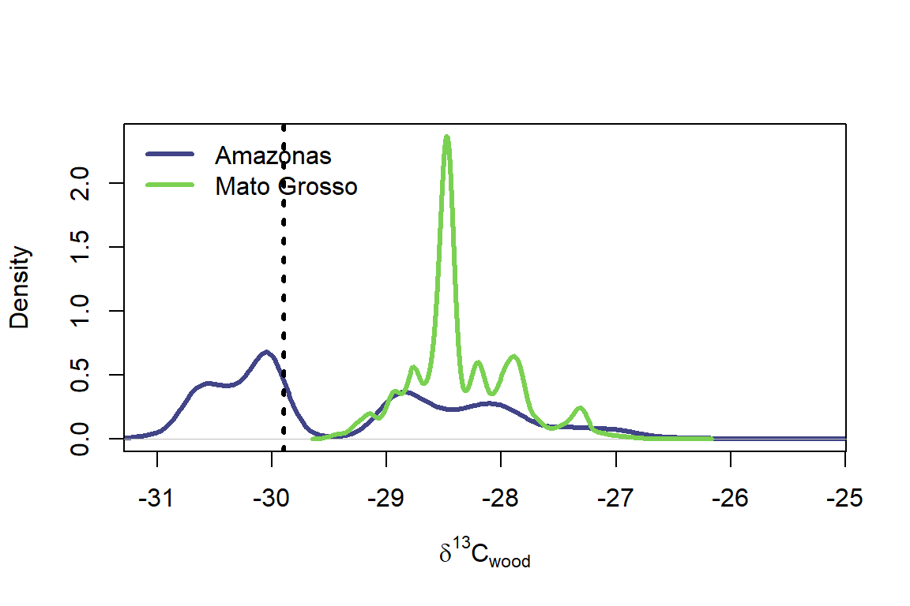

Deoclecio J. Amorim (CENA), João Paulo Sena-Souza (Unimontes) e Paulo José Duarte Neto (UFRPE)
Configuração inicial
# Limpar área de trabalhorm(list =ls()) gc(reset =TRUE)
used (Mb) gc trigger (Mb) max used (Mb)
Ncells 608188 32.5 1384530 74 608188 32.5
Vcells 1111716 8.5 8388608 64 1111716 8.5
graphics.off() #Pacotes necessáriosif(!require(readxl))install.packages("readxl", dep =TRUE, quiet =TRUE)
Carregando pacotes exigidos: readxl
if(!require(tidyverse))install.packages("tidyverse", dep =TRUE, quiet =TRUE)
Carregando pacotes exigidos: tidyverse
── Attaching core tidyverse packages ──────────────────────── tidyverse 2.0.0 ──
✔ dplyr 1.1.4 ✔ readr 2.1.5
✔ forcats 1.0.0 ✔ stringr 1.5.1
✔ ggplot2 3.5.2 ✔ tibble 3.2.1
✔ lubridate 1.9.4 ✔ tidyr 1.3.1
✔ purrr 1.0.4
── Conflicts ────────────────────────────────────────── tidyverse_conflicts() ──
✖ dplyr::filter() masks stats::filter()
✖ dplyr::lag() masks stats::lag()
ℹ Use the conflicted package (<http://conflicted.r-lib.org/>) to force all conflicts to become errors
if(!require(terra))install.packages("terra", dep =TRUE, quiet =TRUE)
Carregando pacotes exigidos: terra
terra 1.8.50
Anexando pacote: 'terra'
O seguinte objeto é mascarado por 'package:tidyr':
extract
O seguinte objeto é mascarado por 'package:knitr':
spin
if(!require(geodata))install.packages("geodata", dep =TRUE, quiet =TRUE)
Carregando pacotes exigidos: geodata
if(!require(geobr))install.packages("geobr", dep =TRUE, quiet =TRUE)
Carregando pacotes exigidos: geobr
Carregando namespace exigido: sf
if(!require(sf))install.packages("sf", dep =TRUE, quiet =TRUE)
Carregando pacotes exigidos: sf
Linking to GEOS 3.13.1, GDAL 3.10.2, PROJ 9.5.1; sf_use_s2() is TRUE
if(!require(sp))install.packages("sp", dep =TRUE, quiet =TRUE)
Carregando pacotes exigidos: sp
if(!require(here))install.packages("here", dep =TRUE, quiet =TRUE)
Carregando pacotes exigidos: here
here() starts at C:/Users/DELL/OneDrive/Documentos/Cena/Cursos_Extensao_CENA/renif_2025
if(!require(assignR))install.packages("assignR", dep =TRUE, quiet =TRUE)
Carregando pacotes exigidos: assignR
knownOrig database version 0.2, 4352 samples from 1986 sites.
if(!require(viridis))install.packages("viridis", dep =TRUE, quiet =TRUE)
O objetivo final com os isoscapes é usá-los para inferir a provável origem geográfica do material de estudo.
Vamos supor o seguinte cenário: Estudar se uma determinada amostra provem do estado do Amazonas ou do Mato grosso. Vamos usar a isoscape gerada pelo modelo RF.
# 1) Ler o shapefile das UFs (Amazônia Legal)fu <- terra::vect(here::here("shapefiles", "fu.shp"))fu <- terra::project(fu, "EPSG:4674")crs(fu)
[1] "GEOGCRS[\"SIRGAS 2000\",\n DATUM[\"Sistema de Referencia Geocentrico para las AmericaS 2000\",\n ELLIPSOID[\"GRS 1980\",6378137,298.257222101,\n LENGTHUNIT[\"metre\",1]]],\n PRIMEM[\"Greenwich\",0,\n ANGLEUNIT[\"degree\",0.0174532925199433]],\n CS[ellipsoidal,2],\n AXIS[\"geodetic latitude (Lat)\",north,\n ORDER[1],\n ANGLEUNIT[\"degree\",0.0174532925199433]],\n AXIS[\"geodetic longitude (Lon)\",east,\n ORDER[2],\n ANGLEUNIT[\"degree\",0.0174532925199433]],\n USAGE[\n SCOPE[\"Horizontal component of 3D system.\"],\n AREA[\"Latin America - Central America and South America - onshore and offshore. Brazil - onshore and offshore.\"],\n BBOX[-59.87,-122.19,32.72,-25.28]],\n ID[\"EPSG\",4674]]"
# Veja os nomes de campos disponíveis para filtrar# names(fu)fu.names <-c("Amazonas", "Mato Grosso")fus <- fu[fu$ADM1_PT %in% fu.names]# 2) Ler isoscape gerada pelo modelo RFiso_files <-list.files(path = here::here("isoscape"), pattern ="\\.tif$", full.names =TRUE)iso_d13 <- terra::rast(iso_files)# Conferir CRScrs(fu)
[1] "GEOGCRS[\"SIRGAS 2000\",\n DATUM[\"Sistema de Referencia Geocentrico para las AmericaS 2000\",\n ELLIPSOID[\"GRS 1980\",6378137,298.257222101,\n LENGTHUNIT[\"metre\",1]]],\n PRIMEM[\"Greenwich\",0,\n ANGLEUNIT[\"degree\",0.0174532925199433]],\n CS[ellipsoidal,2],\n AXIS[\"geodetic latitude (Lat)\",north,\n ORDER[1],\n ANGLEUNIT[\"degree\",0.0174532925199433]],\n AXIS[\"geodetic longitude (Lon)\",east,\n ORDER[2],\n ANGLEUNIT[\"degree\",0.0174532925199433]],\n USAGE[\n SCOPE[\"Horizontal component of 3D system.\"],\n AREA[\"Latin America - Central America and South America - onshore and offshore. Brazil - onshore and offshore.\"],\n BBOX[-59.87,-122.19,32.72,-25.28]],\n ID[\"EPSG\",4674]]"
crs(iso_d13)
[1] "GEOGCRS[\"SIRGAS 2000\",\n DATUM[\"Sistema de Referencia Geocentrico para las AmericaS 2000\",\n ELLIPSOID[\"GRS 1980\",6378137,298.257222101004,\n LENGTHUNIT[\"metre\",1]]],\n PRIMEM[\"Greenwich\",0,\n ANGLEUNIT[\"degree\",0.0174532925199433]],\n CS[ellipsoidal,2],\n AXIS[\"geodetic latitude (Lat)\",north,\n ORDER[1],\n ANGLEUNIT[\"degree\",0.0174532925199433]],\n AXIS[\"geodetic longitude (Lon)\",east,\n ORDER[2],\n ANGLEUNIT[\"degree\",0.0174532925199433]],\n ID[\"EPSG\",4674]]"
ID lyr1
1 Amazonas -29.31578
2 Mato Grosso -28.34664
Os valores médios d13C_wood previstos pelos nossos mapas isotópicos para os dois estados diferem em cerca de 0.97% (por mil).
Com base nisso é possivel determinar se uma amostra provem de algum desses estados? Por exemplo, a amostra 103 provem do Amazonas ou Mato Grosso?
amz_var_clim <- readxl::read_excel(here::here("dados", "madeira_amz_var_clim.xlsx"), sheet =1)head(amz_var_clim) #leitura das primeiras 6 linhas
# A tibble: 6 × 12
x y Site Family d13C_wood elev_mean prec_mean srad_mean tavg_mean
<dbl> <dbl> <chr> <chr> <dbl> <dbl> <dbl> <dbl> <dbl>
1 -67.0 -0.121 São Gab… Myris… NA 85.4 234. 14214. 26.0
2 -67.0 -0.121 São Gab… Myris… NA 85.4 234. 14214. 26.0
3 -67.0 -0.121 São Gab… Myris… NA 85.4 234. 14214. 26.0
4 -67.0 -0.121 São Gab… Myris… NA 85.4 234. 14214. 26.0
5 -67.0 -0.121 São Gab… Myris… NA 85.4 234. 14214. 26.0
6 -66.9 -0.041 São Gab… Burse… NA 93.4 230. 14186. 26.1
# ℹ 3 more variables: tmax_mean <dbl>, tmin_mean <dbl>, vapr_mean <dbl>
str(amz_var_clim) #Estrutura dos dados
tibble [2,377 × 12] (S3: tbl_df/tbl/data.frame)
$ x : num [1:2377] -67 -67 -67 -67 -67 ...
$ y : num [1:2377] -0.121 -0.121 -0.121 -0.121 -0.121 -0.041 -0.041 -0.041 -0.041 -0.041 ...
$ Site : chr [1:2377] "São Gabriel da Cachoeira" "São Gabriel da Cachoeira" "São Gabriel da Cachoeira" "São Gabriel da Cachoeira" ...
$ Family : chr [1:2377] "Myristicaceae" "Myristicaceae" "Myristicaceae" "Myristicaceae" ...
$ d13C_wood: num [1:2377] NA NA NA NA NA NA NA NA NA NA ...
$ elev_mean: num [1:2377] 85.4 85.4 85.4 85.4 85.4 ...
$ prec_mean: num [1:2377] 234 234 234 234 234 ...
$ srad_mean: num [1:2377] 14214 14214 14214 14214 14214 ...
$ tavg_mean: num [1:2377] 26 26 26 26 26 ...
$ tmax_mean: num [1:2377] 30.9 30.9 30.9 30.9 30.9 ...
$ tmin_mean: num [1:2377] 21.2 21.2 21.2 21.2 21.2 ...
$ vapr_mean: num [1:2377] 2.88 2.88 2.88 2.88 2.88 ...
Dado o valor medido, como você julgaria qual unidade é a origem mais provável? A maioria dos algoritmos de classificação simples usa uma métrica de distância para avaliar a similaridade entre o valor da amostra e as classes possíveis, atribuindo então a amostra à classe mais similar. Por exemplo:
Com base no inverso da distância podemos admitir que é mais coerente essa amostra ser do Amazonas. Vejamos mais alguns detalhes:
cols =viridis(2, begin =0.2, end =0.8)fus.all =extract(iso_d13, fus)d1 =density(fus.all[fus.all$ID ==1, 2], na.rm =TRUE)d2 =density(fus.all[fus.all$ID ==2, 2], na.rm =TRUE)plot(d1, xlim =range(fus.all[, 2], na.rm =TRUE), ylim =range(c(d1$y, d2$y)), main ="", xlab =expression(delta^{13}*"C"["wood"]), col = cols[1], lwd =3)lines(d2, col = cols[2], lwd =3)abline(v = unknown$d13C_wood, lwd =3, lty =3)legend("topleft", fu.names, lwd =3, col = cols, bty ="n")

Note que agora as coisas parecem um pouco diferentes. O que não percebemos antes, quando avaliamos apenas as médias, é que as d13C_wood previsões para Mato Grosso estão restritas a uma faixa estreita de valores, enquanto as do Amazonas são muito mais dispersas. Como resultado, o valor da amostra desconhecida tem, na verdade, uma probabilidade maior de ocorrer no Amazonas. Podemos avaliar a diferença entre as probabilidades extraindo a densidade de probabilidade do valor da amostra por mil dos kernels para as duas regiões:
Isso demonstra que a probabilidade de encontrar esse valor no Amazonas é muito maior do que no Mato Grosso, levantando a hipotese que realmente o Amazonas seja a região de origem mais provável.
Podemos ir um passo além, no entanto, aplicando o Teorema de Bayes para fazer uma afirmação quantitativa sobre a probabilidade de cada unidade ser a verdadeira região de origem, partirmos das seguintes premissas:
Nossa amostra desconhecida deve ter vindo de um dos dois estados, e
Antes de considerarmos nossos dados isotópicos, ambos os estados têm a mesma probabilidade de serem a verdadeira origem.
O Teorema de Bayes nos diz que a probabilidade de uma determinada região ser a verdadeira região de origem é igual à probabilidade de observarmos nossos dados isotópicos nessa região dividida pela probabilidade de observarmos os dados em qualquer uma das regiões. Acabamos de determinar as probabilidades para os dados acima, o que torna esse cálculo muito fácil:
Region Probalidade_posteiro
1 Amazonas 0.9996486088
2 Mato Grosso 0.0003513912
A probabilidade posterior é a probabilidade após considerarmos nossas novas evidências (isotópicas) e, como você pode ver aqui, ela sugere que há uma alta probabilidade (99%) de que nossa amostra desconhecida seja do Amazonas e não do Mato Grosso. Se quisermos ‘atribuir’ a amostra a uma região de origem mais provável, escolheríamos o Amazonas.
Resumindo nosso exemplo, a chave para atribuir a amostra a uma região geográfica é encontrar a probabilidade de nossa evidência (o valor da amostra d13C_wood) ocorrer em cada uma de nossas potenciais regiões de origem. Com essa informação, podemos aplicar o Teorema de Bayes para encontrar a probabilidade de cada região ser a verdadeira origem.
Isoscapes baseados em probabilidade
Usando a isoscape gerada pelo modelo RF vamos considerar cada célula da grade no mapa de isótopos separadamente como uma possível localização de onde nossa amostra pode ter se originado.
Uma das implicações dessa abordagem é que agora estamos considerando um número muito grande de possíveis locais de origem. Esse número dependerá da extensão e da resolução do nosso mapa isotópico, mas, neste exemplo, o número é:
sum(!is.na(values(iso_d13[[1]])))
[1] 61093
# Cada pixel tem aproximadamente 85 km2terra::res(iso_d13[[1]])
[1] 0.08333333 0.08333333
Consequentemente, a probabilidade de qualquer célula da grade ser a localização real de origem será bastante pequena. Por exemplo, se nossa suposição inicial for que cada célula da grade tem a mesma probabilidade de ser a verdadeira origem da amostra, cada célula terá uma probabilidade de:
1/sum(!is.na(values(iso_d13[[1]])))
[1] 1.636849e-05
Esses pequenos valores de probabilidade confundem um pouco, mas podemos ver aqui como eles surgem e que são esperados. Em geral, não estaremos interessados nos valores de probabilidade em si, mas na magnitude relativa das probabilidades para diferentes locais.
Para aplicar nosso método baseado em probabilidade às células da grade do mapa de isótopos, precisamos conhecer as distribuições de probabilidade dos d13C_wood valores em cada célula. Nesse caso, vamos assumir a suposição de normalidade.
Para realizar a análise (e ao longo do restante desta vinheta), usaremos funções do assignR package.
O mapa mostra a localização de origem verdadeira e conhecida desta amostra. É possível observar que ela não se encontra em uma região com probabilidade posterior particularmente alta. Também não está na região com as probabilidades mais baixas. Podemos extrair o valor real para esta localização, que se situa no meio do intervalo obtido na análise:
extract(p.map1, uk.sp)
ID 103
1 1 3.786974e-05
Inferência
Algumas perguntas:
De onde veio a amostra?
Quais são os locais de origem mais prováveis?
A função qtlRaster() oferece duas opções para tentar responder essas questões, a primeira (e padrão) baseada na área do mapa:
Aqui extrairmos 50% da área de estudo, gerando mapas que mostram os 50% das células da grade com a maior probabilidade posterior da amostra.
A segunda opção de atribuição é um pouco menos arbitrária e envolve a seleção das células mais prováveis da malha isotópica que representam coletivamente uma certa quantidade da probabilidade posterior. Neste caso, escolhemos um valor de 0,95. Assim, podemos interpretar diretamente o resultado: tendo em conta os dados e os pressupostos da nossa análise, existe uma probabilidade de 95% de a amostra provir da área selecionada.
Como você pode ver, precisamos selecionar mais de 50% da área de estudo para atingir nosso limiar de probabilidade de 95%. Também é possível observar que, neste caso, a verdadeira localização de origem está incluída na região de atribuição. Sempre haverá muitos locais onde um determinado valor pode ocorrer, mas pode ser bastante óbvio quando o valor de uma amostra não corresponde bem a um determinado local.
Usando a razão de chances podemos responder Qual unidade federativa é a localização de origem mais provável, Amazonas ou Mato Grosso?
oddsRatio(p.map1, fu.sub)
$`P1/P2 odds ratio`
[1] 4.730936
$`Ratio of numbers of cells in two polygons`
[1] 1.72567
Há dois pontos a observar aqui:
A razão de chances indica que é 1,7 vezes mais provável que a amostra tenha vindo do Amazonas (que por acaso é o verdadeiro local de origem).
Nossa análise de probabilidade de isótopos adiciona um fator importante que ignoramos implicitamente na análise de classificação original: a incerteza da previsão. Lembre-se de que nossos modelos de isótopos explicam apenas cerca de metade da d13C_wood variabilidade. A variação restante provém de duas fontes:
Erro do modelo - nosso modelo é imperfeito e não representa perfeitamente o padrão de d13C_wood valores médios na área de estudo.
Variabilidade local - árvores individuais que vivem no mesmo local podem apresentar valores que variam em vários por mil. Por exemplo, aqui está a distribuição de valores para árvores individuais da mesma família e local de coleta que nossa amostra de teste desconhecida:
Se quisermos avaliar se uma amostra pode ter vindo deste local com base em seu d13C_wood valor, é importante conhecer o valor médio do local, mas também precisamos considerar a dispersão: claramente, valores que variam de -34 a -26 por mil são plausíveis neste local.